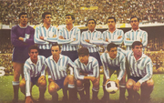

Planteles campeones
El equipo de 1913 que obtuvo el primero de los 7 campeonatos consecutivos, récord histórico nacional argentino aún vigente
El plantel del primer equipo tricampeón del fútbol profesional argentino (1949, 1950, 1951)

El plantel del primer equipo argentino campeón mundial en 1967
El plantel del primer equipo campeón de campeones de América en 1988
El plantel del Racing positivo del Campeonato 2014, su decimoséptimo